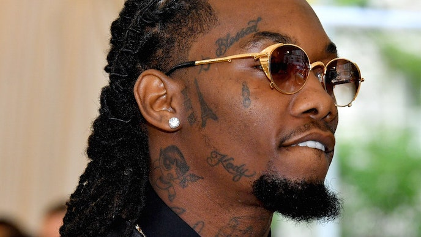
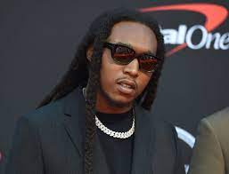

How it all started
While their rise to fame was somewhere between fast and meteoric, the Atlanta trio Migos steeped in the Southern
tradition of hip-hop groups, having come together over their shared love of acts like the Hot Boys and OutKast. Members
Offset, Quavo, and Takeoff, who are all related, grew up together and first started making music in 2009 under the name
Polo Club, with the name Migos becoming official in 2010. In 2012, they released the mixtape No Label, which featured the
cut Bando,
a regional hit that caught the attention of producer Zaytoven and Kevin Lee, aka Coach K, the manager who
launched the careers of Gucci Mane and Young Jeezy. The year 2013 was a whirlwind, as June saw the group drop their
Young Rich N*ggas mixtape, which featured the instant hit Versace.
That same year, Coach K got them on the Hot 107.9
Birthday Bash, a popular Atlanta festival where Migos came across their newest fan, Drake. The rapper added a verse to
the Versace
remix and put the cut on his 2013 album Nothing Was the Same.
Members of the Band

Quavo
Quavious Keyate Marshall was born in 2nd April, 1901. He is professionally known as Quavo.
A cousin to Offset and an uncle to Takeoff. Outside of Migos, Quavo has been featured on four singles that have
peaked with the top of the Billboard Hot 100, including DJ Khaled's I'm the One
and No Brainer
the former of which reached number 1 along with Congratulations
, which peaked at number 8 on the Billboard
Hot 100. On October 12, 2018, he release his debut solo album Quavo Huncho
which peaked at number 2 on the Billboard 200.

Offset
Kiari Kenderell Cephus oes by the stage name Offset is an American rapper and songwriter
born in 14th December, 1991. A cousin to the two other members, Takeoff, and Quavo. side from music, Takeoff is an investor in Esports
Faze Clan.n addition to Migos, Offset has released solo music and collaborated with numerous artists.
n June 2017, he was featured on Metro Boomin's single No Complaints
alongside Drake, which peaked at number 71 on the
Billboard Hot 100, and in September he joined Macklemore on the song Willy Wonka
, from the album Gemini.
Offset would eventually release a collaborative studio album with rapper 21 Savage and record producer Metro Boomin titled,
Without Warning. he album was released on October 31, 2017 and debuted at number 4 on the US Billboard 200 chart.
On February 22, 2019, he released his first solo album Father of 4. The album featured the single Clout, with Cardi B, which
peaked at the top 40 of the Hot 100 at number 39.

Takeoff
Intruder
as a non-album single and
was featured on his uncle Quavo's collaborative project, Huncho Jack, Jack Huncho, with fellow rapper Travis Scott, on the song Eye 2 Eye
. The song
charted on the Hot 100 at 65th and in Canada at 55th. In that year, he also collaborated with Scottish DJ Calvin Harris for his Funk Wav Bounces Vol.
1 album on the song titled Holiday
. The song, featuring Snoop Dogg and John Legend, charted on the Dance/Electronic Songs chart at 26th.